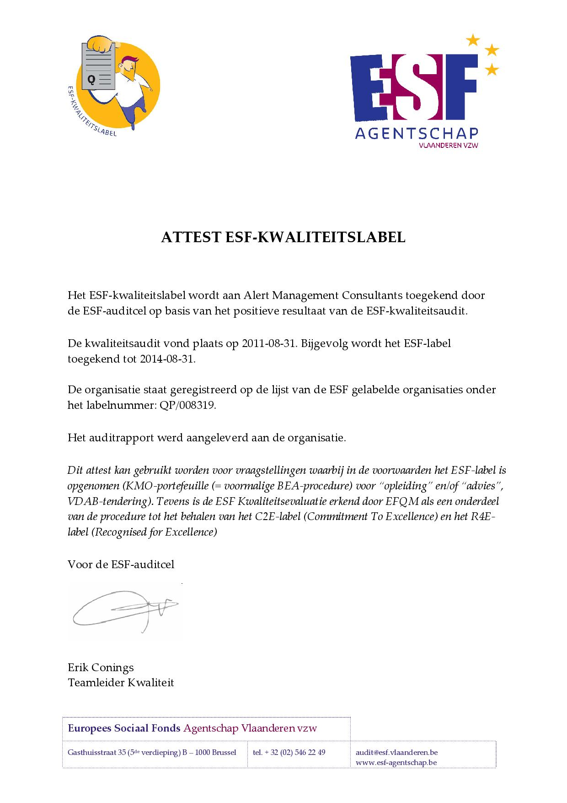

'Waarom gemakkelijk als het ook moeilijk kan'.
Vanaf half jaren negentig heeft AMC zich toegelegd op empirisch onderzoek om een eigen persoonlijkheidstest te ontwikkelen, met name de Koan-PI. Daarnaast hebben we ook andere HR instrumenten uitgewerkt zoals de ALTI die een betrouwbare meting van 16 Psychologische Types levert, de Alert360°, een uitgebreid platform met 360° vragenlijsten en dito rapporten, Polyglot taaltesten, , Facet capaciteitentest en een geheel van Postbak Oefeningen. Onze klanten gebruiken deze instrumenten me grote tevredenheid in onder meer selectie, persoonlijke ontwikkeling, leiderschapsontwikkeling en teambuilding. De vragenlijsten en rapporten zijn via internet beschikbaar. Op vlak van training is Alert Management Consultants behelst ons trainingsaanbod een gamma van in house opleidingen en workshops over diverse thema’s zoals Team Building, Communicatie, Prestatiemanagement, Gedragsinterviews en opleidingen op basis van de MBTI theorie of Psychologisch Type. Daarnaast bieden we accreditatietrainingen voor onze diverse HR-instrumenten aan.
Op het vlak van HR advies kan Alert Management Consultants met raad en daad bijstaan in verband
met assessment, coaching, 360° feedback en loopbaanbegeleiding. Hierbij zijn er telkens twee opties:
u kunt zelf bij ons leren hoe u er mee aan de slag gaat, of u kunt het hele proces van toepassing en
begeleiding door ons laten verzorgen.
Tot slot kunt u gebruik maken van onze ervaring in competentiemanagement. Enerzijds kunnen wij u
helpen bij uw HR-aanpak door te werken met competenties. Anderzijds kunnen wij in uw organisatie
een op maakt gemaakt project voor competentiemanagement opzetten.